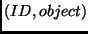

Next: I/O Up: Collections Previous: Queues
A container is an implementation of a map. A container generates a unique ID
for each object and stores a tuple, namely . If an object is inserted into a container, a new ID is
created and returned. An object of a container can only be retrieved via the corresponding
ID. A container supports the removal and update of objects as well as the retrieval
of its elements through an iterator. The main intent of the abstract class Container
is to provide buffered access to objects (typically stored in secondary memory).
Therefore, every access method provides a flag that allows to fix and unfix the
accessed object (to request the insertion of objects into the buffer and the removal,
respectively). Furthermore, buffered objects can be flushed, i.e., the buffer
is forced to write back any modified object to its underlying container. The package
xxl.collections contains only a few implementations of the Container
interface, e.g. a MapContainer. Most of the interesting containers are
designed for external data management. These implementations (e.g. BlockFileContainer,
BufferedContainer and BufferedRandomAccessFileContainer) are in
the package xxl.io.
Bernhard Seeger
2001-10-11